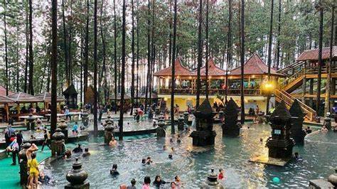

Info Singkat Tentang Guci Forest
Guci Forest adalah destinasi wisata alam yang terletak di Tegal, Jawa Tengah. Tempat ini terkenal dengan keindahan alamnya yang asri, udara yang sejuk, serta suasana yang menenangkan. Salah satu daya tarik utama Guci Forest adalah hutan pinus yang rimbun, pemandian air panas alami, dan berbagai spot untuk berkemah serta glamping yang memberikan pengalaman unik di tengah alam.
Pengunjung juga bisa menikmati berbagai aktivitas outdoor seperti trekking, piknik, dan berenang di kolam air panas yang menyegarkan. Guci Forest menjadi pilihan favorit bagi wisatawan yang mencari tempat rekreasi untuk melepas penat dan menyatu dengan alam.
Lokasi Guci Forest
Tempat-Tempat Menarik di Guci Forest

Camping: Camping di Guci Forest adalah salah satu aktivitas luar ruang yang sangat populer, memberikan pengalaman berkemah yang menyenangkan di tengah alam yang sejuk dan alami.
Glamping Guci: Cara modern untuk berkemah, menikmati keindahan alam dengan fasilitas nyaman.

Kolam renang: Nikmati kolam renang Guci Forest dengan hawa air panas.